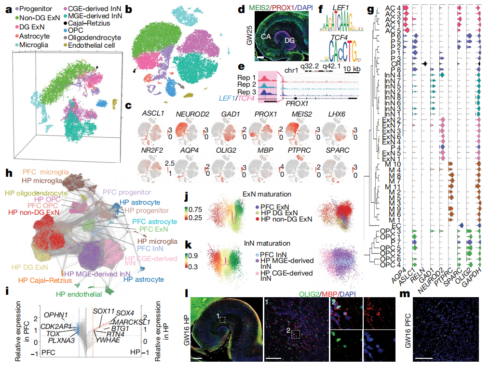
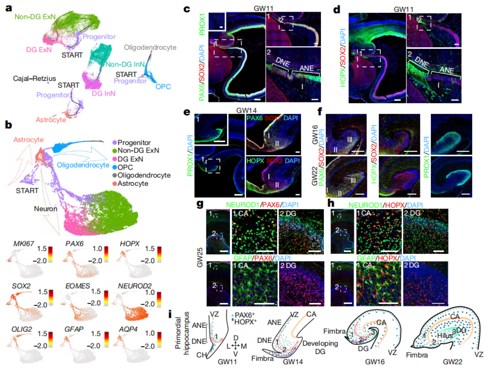
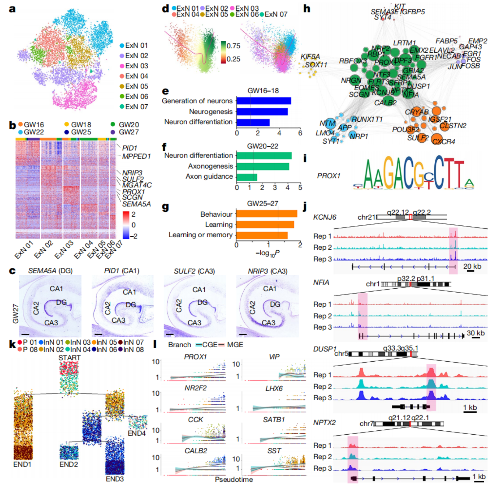
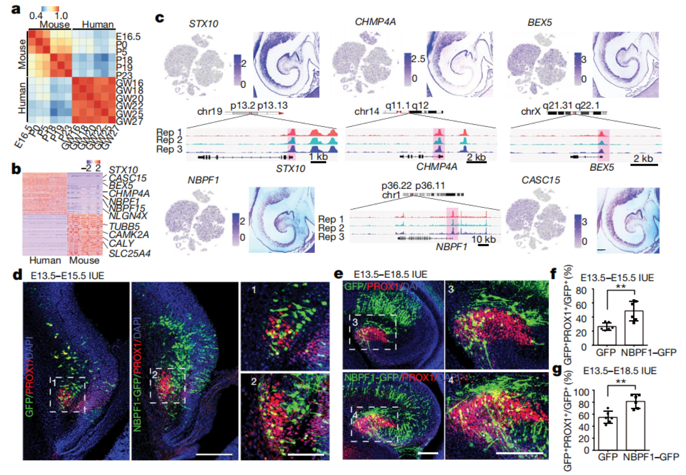

文献阅读 --- Decoding the development of the human hippocampus
文献信息
题目: 解码人类海马体的发育
DOI: https://doi.org/10.1038/s41586-019-1917-5
Cite: Zhong S, Ding W, Sun L, et al. Decoding the development of the human hippocampus. Nature 577, 531–536 (2020).
Abstract：
海马体是人大脑边缘系统的重要组成部分，在空间导航和从短期记忆到长期记忆的信息巩固中起着重要作用。在这里，我们使用 scRNAseq 和 ATAC-seq 分析来说明发育中的人类海马的细胞类型、细胞系、分子特征和转录调控。利用妊娠 16-27 周来自人类海马的 30,416 个细胞的转录组，我们确定了 47 种细胞亚型及其发育轨迹。我们还鉴定了 PAX6+ 和 HOPX+ 海马祖细胞的迁移路径和细胞谱系，以及 CA1、CA3 和 DG 神经元的区域标记物。多组学数据已经揭示了 DG 标记物 PROX1 的转录调控网络。我们还说明了在发育中的人类前额叶皮质和海马体中的空间特异性基因表达。妊娠第 16-20 周的人类海马的分子特征与出生后第 0-5 天的小鼠相似，揭示了两个物种之间的基因表达差异。引物特异性基因 NBPF1 的瞬时表达导致小鼠海马中 PROX1+ 细胞的显著增加。这些数据为理解人类海马体的发育提供了蓝图，并为研究相关疾病提供了工具。
Results：
Fig1. 发育中的人类海马体单细胞的分子多样性

a. 11个 major clusters 的 t-SNE 3D 可视化，progenitors(祖细胞)，Non-DG ExN(非DG兴奋性神经元)，DG ExN(DG兴奋性神经元)，Astrocyte(星形胶质细胞)，Microglia(小胶质细胞)，CGE-derived InN(CGE-源抑制性神经元)，MGE-derived InN(MGE-源抑制性神经元)，Cajal–Retzius(CR细胞)，OPC(少突胶质细胞祖细胞)，Oligodendrocyte(少突胶质细胞)，Endothelial cell(内皮细胞)。
b. 11个 major clusters 的 t-SNE 2D 可视化。
c. markers gene 的表达情况，PROX1 为 DG ExN 的 marker，LHX6 为 MGE-derived InN 的 marker，NR2F2 为 CGE-derived InN 的 marker。
d. MEIS2 和 PROX1基因的免疫组化实验。
ef. PROX1 是海马颗粒细胞发生和DG形成的重要转录因子，通过 ATAC-seq 预测了 PROX1 的两个结合位点 LEF1 和 TCF4 的 motif。
g. 进一步将细胞分为 47个亚类，AC(astrocyte，星形胶质细胞); P(progenitor，祖细胞); CR(Cajal–Retzius cell); M(microglia，小胶质细胞); EC(endothelial cell，内皮细胞)。
h. 海马(HP)和前额叶(PFC)细胞类型比较。
i. PFC 和 HP 中保守分化网络相关基因。SOX4 和 SOX11 是成人海马神经发生期间神经元分化所需的两个 SOXC 转录因子，在海马中相对高表达。
jk. 成熟轨迹比较，HP non-DG ExN 比 PFC ExN 更成熟，而 HP DG ExN 与 PFC ExN 相似。PFC 和 HP 的 InN 通常表现出相似的成熟状态，而 HP MGE-derived InN 比 HP CGE-derived InN 更成熟。
lm. OLIG2 和 MBP 的免疫荧光染色显示，GW16 HP 中有 MBP+ cells，而 GW16 PFC 中没有 MBP+ cells。这表明少突胶质细胞可能参与了早期发育过程中海马神经元的成熟。
Fig2. 发育中的人类海马体神经祖细胞的分子特征

a. 去除小胶质细胞和内皮细胞后进行拟时序分析，单细胞轨迹从祖细胞开始，终止于兴奋性神经元、抑制性神经元、星形胶质细胞和少突胶质细胞。
b. 祖细胞发育为兴奋性神经元、星形胶质细胞和少突胶质细胞的三条轨迹。
cd. PAX6+ 和 HOPX+ 祖细胞被认为是新皮层中的神经源性祖细胞，可能参与了人类海马的神经发生和胶质细胞发生。通过免疫荧光染色检测了表达 PAX6 或 HOPX 的细胞的位置。
在GW11中，位于皮质边缘(cortical hem，CH)附近的原始海马区由齿状神经上皮(dentate neuroepithelium，DNE)和氨状神经上皮(ammonic neuroepithelium，ANE)组成。DNE 和 ANE 中的大部分细胞表达 SOX2，并且 ANE 中的 PAX6+ SOX2+ 祖细胞开始迁移，DNE 中的 HOPX+ SOX2+ 祖细胞也开始迁移。
e. 海马发育到 GW14 时，许多 PAX6+ 祖细胞从心室区(ventricular zone)向未来的 DG 迁移(PROX1+区域)，形成 primary matrix (I) 和 secondary matrix (II)。HOPX+ 祖细胞也向相同的方向迁移，但更靠近 pial side。
f. 发育到 GW16 时，PAX6+ 和 HOPX+ 祖细胞继续迁移，许多细胞到达 hilus，形成 DG 细胞的起源中心，称为 tertiary matrix (III)。值得注意的是，PAX6+ 祖细胞在迁移过程中位于 HOPX+ 祖细胞之外。
发育到 GW22 时，PAX6+ 祖细胞仍然丰富，部分位于 DG 叶片，但只有部分 HOPX+ 祖细胞位于 hilus；大多数 HOPX+ 祖细胞位于 cornu ammonis (CA)。
gh. 发育到 GW25 时，我们在 CA 和 DG 中观察到 PAX6+ NEUROD1+ 细胞，而仅在 CA 中观察到 PAX6+ GFAP+ 细胞。在 HOXP+ 细胞中也发现了类似的表达模式。
i. PAX6+ 或 HOPX+ 祖细胞在 GW11 to GW22 发育中的位置示意图。箭头表示迁移的方向。
Fig3. 人类海马体发育过程中神经发生的动态变化

a. 发育中的人类海马体兴奋性神经元聚类亚型 t-SNE 展示。
b. 每个类群基因表达情况，顶部按妊娠周进行划分。
c. 区域特异性基因的原位杂交， marker genes 选择，DG：SEMA5A，CA1：PID1，CA3：SULF2、NRIP3。
d. DG：SEMA5A（ExN 03），CA1：PID1（ExN 01），CA3：SULF2、NRIP3（ExN 02）。与祖细胞迁移路径一致，成熟分析表明 CA1 神经元比 CA3 和 DG 神经元更成熟。
e-g. 不同 GW 时期的 DEGs 的 GO 分析表明，GW16-18 主要是神经发生，GW20-22 主要是轴突发成，GW25-27 主要是功能发育。
h. WGCNA 分析基因共表达网络。
ij. 通过 ATAC-seq 数据分析，发现 PROX1 motif 接近几个基因的转录起始位点，包括 KCNJ6、NFIA、DUSP1、NPTX2，它们都位于 i 中绿色模块中。KCNJ6(也被称为 GIRK2)是编码G-蛋白-活性的内部整流 K+ 通道的一个成员，该通道在大脑中广泛丰富，与学习、记忆、奖励、运动协调和其他功能有关。
kl. 海马抑制性神经元起源于 MGE 和 CGE 前体。拟时序分析表明，大部分 MGE-derived InN (LHX6+) 和 CGE-derived InN (NR2F1/2+) 是分离的。表达 CCK、CALB2、VIP 的 InN 在 CGE 分化路径中积累，表达 SATB1、SST 的 InN 在 MGE 路径中积累。
Fig4. 在人类发育海马体中表达的特定基因

a. 人类和小鼠海马发育不同阶段的相关性热图。人类 GW16-20 与小鼠 P0-5 的海马体相似，这表明人类胚胎海马的发育比小鼠更早，但持续时间更长。
b. 显示了人类和小鼠海马中的 DEGs。
c. 一些 DEGs 的 t-SNE 分布、原位成像、ATAC-seq 结果。
d-g. 神经母细胞瘤断点家族(NBPF)基因包含一个被称为 DUF1220 的重复结构域，其拷贝数与大脑的进化和复杂性有关。几个NBPF家族基因在海马细胞中表达，NBPF1在所有类型的细胞中表达均较高。具有 8 个 DUF1220 结构域的 NBPF1 只存在于灵长类动物中，特别是在进化上与人类很接近的物种中。为了进一步研究 NBPF1 在海马发育中的作用，在胚胎第13.5天(E13.5)小鼠原始海马区短暂表达 NBPF1，观察到与对照小鼠相比，这些小鼠 PROX1+ 区域在 E15.5 和 E18.5 增大。